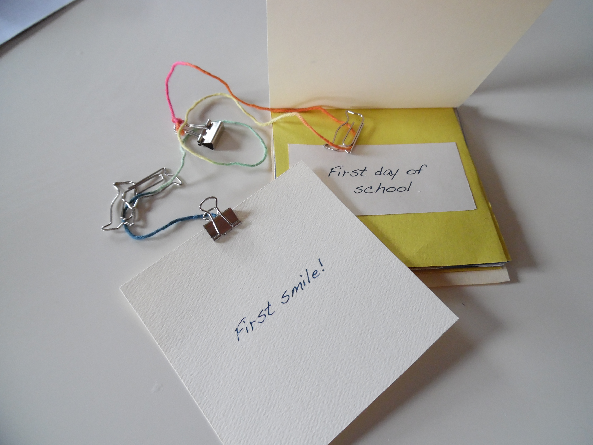

-

- 
-

IoT @ Home
As a process experiment for The MEME Design, my colleague and I drew on our engineering, entrepreneurship, and design backgrounds to pilot agile design research. Starting with the general theme of Internet of Things (IoT) in the home, we narrowed quickly on parents of young children as a user group that could benefit easily from connected devices. Since The MEME's engineering expertise lies primarily in software, we geared our product concepts to play to these strengths. From repeated ideations to a combination of spontaneous and scheduled interviews, we developed and tested 7 low-fidelity "works-like" prototypes over 8 weeks. Our app mockups are available upon request. Email celine.ta@students.olin.edu for more information.
Project Info
- Team Size: 2
- Interviews: 25
- Summer 2015
- Email for PDF